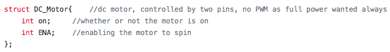

Simulcrum Creation Using Linear Production Techniques
An ECE 4760 Final Project by Ho-Jung Yang and Jared Gallina
Project Description
SCULPT is a device that takes its inspirations from a CNC and creates a carving of a user selected image on a piece of material.
The purpose of SCULPT was to allow a user to be able to create a carving of some image they found interesting. The motivation behind working on SCULPT was an artistic one as well as for the interesting challenge it posed. The ability to make a 2.5D carving of an image sounded like an enticing capability to create interesting pieces of work for around the house, at work, or anywhere else one would like. Beyond the artistic aspect, SCULPT could be extended to applications such as 2.5D maps to better understand the lay of the land versus contour lines, and anywhere that having a 2.5D representation would be favorable over just 2D.
In our project the following was created: a user interface in Python for loading a desired image to be carved, an implementation of a CNC machine that operated via stepper motors and precision lead screws for precise movement, and finally the software backend that converted the user sent image to the appropriate information for the physical component of the system as well as handling other aspects of operation.
Hardware
Mechanical
The whole structure was built from scratch. The construction of SCULPT was made from laser cut acrylic, 3D printed components, as well as machined parts. All relevant construction files from laser cutting and 3D printing are in the Appendix, but many of the parts needed modifications after creation to fit on the final structure. THe machined parts (lead screws and aluminum stabilization rod) were cut to fit the ret of construction, thus there is no definitive file for dimensioning them.
At first, the laser cut encasing used a ribbed or snowflake-looking structure to keep all the parts together. This didn’t constrain all the connected parts together well and thus a new connection method was devised. Presently the components of SCULPT are attached by using male and female pieces that slot into each other, and that are then secured using nuts and bolts. An example of this can be seen here:
Currently, the base plate of SCULPT is ⅛” acrylic and is placed on the ground with 4 unconnected risers in each corner. This design for a base causes a lot of shaking while moving in the Z direction (as seen in videos later in the report) and could be improved by making the same design with ¼” acrylic and connected the 4 risers together with some kind of rod, or opting for a more solid material such as aluminum.
The “carve-plate” of SCULPT also shakes a lot since as the print was warped and could not hold the plate as tightly as wanted. This can be improved by doing another print that would be more successful.
A few of the laser cut parts are a few millimeter off from being a perfect fit. The DC motor has a hard time moving back and forth between the laser cut slats on its sides. This could be solved by cutting better-fit parts.
Electrical
The stepper motors control how far the DC motor and test bed move in the X, Y, and Z directions. The PIC32 communicated with them through motor controllers that took in specific signals to move in a certain direction for a set distance (further discussed in the Software section). The Z (up and down) motion control used a different stepper motor with a higher torque rating than the X or Y directions after testing the strength of the smaller stepper motors turning and determining it wasn’t strong enough. Because the motor was a bit larger and had more torque, it also drew more current and needed a different motor controller that could handle higher currents continuously.
The DC Motor used the same motor controller as the Z direction controller as the implementation was simplest rather than attempting to use the other drivers in a way that was not intended. All the motors (steppers and DC) drew power from a 19 V voltage supply that was isolated from the PIC32 with the motor drivers. The power supply was a modified version of a laptop charger such that the powering of SCULPT could be done from an area with a wall outlet.
Originally, a protoboard was made to keep all the wiring nice, but it ultimately didn’t work. Nothing seemed to be shorted when doing a test with a power supply, but a component began to smoke once everything was put together on the protoboard. Thus, the result was to implement the electronics on a breadboard, seen below.
The final aspect of physical design was to create a power kill switch in order to ensure user safety. The integration of the switch was to place it on the very front of the device for easy access. A picture of the switch is seen here:
Software
Image Transmission
The first component of software in the system is a Python interface for the user to be able to select a desired image and have it sent to the PIC for carving. In the software the user only needs to specify a relative path to their desired image. Then, the program finds the image, and begins to process it to the correct format for the backend software.
Stage one of processing Involves converting an image from color to grayscale in order to determine whether or not parts of the image should be carved or not based on simple thresholding later. An example of this conversion can be seen below:
Base Image
Image After Grayscale
Stage two of the python processing is to resize the image. The resized dimensions are based on the physical limitations or our system. Since the drill bit used for carving is 3 mm in diameter, the maximum resolution possible in the x dimension was 40 pixels and the maximum in y was 120 pixels. However, due to securing constraints the tested images were of size 20 by 20. After a resizing to the 20x20 size, the result on the test image is as seen here:
Image After Resizing
After the image processing was complete, the final Python action was to send over each pixel’s data via a UART connection to the PIC32. The sending was performed at a baud rate of 9600 with a time delay of .02 seconds between each send action. To indicate that each data value sent is a pixel to the receive code, the letter ‘p’ is sent preceding any data value. Finally, to indicate that the entire file has been sent, the letter ‘e’ is sent to indicate the end of the data file.
Useful Notes on Transmitting:
One essential check is that the port which is opened in the beginning of the Python script corresponds to the same port that is used for the UART cable.
An implementation detail is that there is a minimum time required between sending data bits in this implementation. A time delay of .02 seconds is a conservative estimate but at at an order of magnitude around .001 seconds the PIC32 will occasionally drop data.
Image Receiving
On the PIC32 side of the serial communication, most of the implementation is drawn from examples found on Bruce Land’s ECE 4760 page in a UART example on the development board page. [1] The receiving is done in a unique thread named serial in the created program, which is scheduled first and suspends all other threads until the data is received (indicated by a state variable data_loaded in the program). In this thread, at each instance of receiving a data packet, it must start with the letter ‘p’ which indicates that another value for a pixel has been received. All pixel data is then stored in a large image array for use later in carving.
Useful Notes on Receiving:
One important feature to check is that in the config file provided by Bruce Land [2] the baud rate needs to be matched to whichever rate is used in the Python code.
Underlying Constructs for Stepper Motor Control
The remainder of the code will discuss the implementation of movements for the CNC via X,Y, and Z axis stepper motors. As such, the basis for these controls, uniquely implemented structures, will be discussed in detail before delving into the details of control. The project implemented two types of stepper motor drivers: one type for the smaller stepper motors, and the L298N driver for the large stepper motor for the Z axis. The small driver was able to be implemented using three pins, one for setting the direction (DIR field), one for commanding a step (STP field), and finally one more for toggling the drivers on and off during long periods of inactivity (not given a field in the struct due to rare usage). The corresponding structures for the steppers controlled by this module also included a third field called stpLeft, which was used to track how many steps each stepper had to make at a given time. The realization of this struct is as follows:
Small Motor Driver Struct
The structure used for the L298N driver was slightly different in that it was an H-bridge driver and thus required four pins. In addition to the additional pins, the driver was also given a field to indicate whether it was currently raised or not (pos_motion) and maintained the stpLeft field mentioned before. The outline of this struct is:
L298 Motor Driver Struct
Besides the structs for stepper motors, a final structure was defined for the operation of the DC motor used for carving the image. This structure was more simplistic as the motor was turned on or off using a simple pin, and a second field was used solely for tracking whether or not the motor was on for use in the program. The DC motor struct is seen here:

DC Motor Driver Struct
Movement Handling
A final aspect worth mentioning before delving further into the specific logic of the CNC control is how the stepper motors are actually commanded to move. The stepping is performed using a timer for the stepper motors and a corresponding state variable keep_moving. Keep_moving is set to a one before the steps are meant to be performed, and is set back to zero when all steps are finished executing. Timer 3 handles the Z axis stepper exclusively, while the X and Y axes are handled in Timer 2. Timer 3 commences with a quick check if the value of stpLeft for stepper three is greater than zero. If so, then one set of four actions is taken based on whether or not the motion should be to ascend or descend (dictated by pos_motion). The steps are the same in each case, but simply execute in different orders. In the beginning of Timer 2, the Z axis motion is prioritized by checking if its corresponding struct has a nonzero value for the steps remaining. The result of this ensures that sections needing to be left uncarved are not accidentally carved by not moving the drill bit up in time as well as the converse case. Once the Z axis stepper has stepped all it needs, the Z and Y axes are then able to move concurrently. The actual stepping is done by simply toggling the STP pin assigned to each stepper struct instance (the transition from high to low is what actually drives the stepper). In order to set the direction of rotation, and thus the direction each axis is moved, the DIR pin for each stepper is either set or cleared which corresponds to either clockwise or counterclockwise rotation. The final aspect of making movement is to actually set the stpLeft field of each struct. The exact value set is handled by the logic discussed further, but in Timer 2 for the smaller drivers, after each toggle of the STP pin, the stpLeft field is decremented. In Timer 3 after each set of four actions the step value is decremented. At the end of Timer 2, after all the steps have executed, the state variable keep_moving is then set back to zero.
Useful Notes on Movement:
The correspondence between value written to the DIR pin and actually roatation is also reliant upon the individual wiring of each stepper, thus it is important to check this for each stepper and not make any assumptions.
Calculations for finding exact displacements were used in logic for later sections, but the calculation was done theoretically and then narrowed down experimentally.
Theoretically Calculation:
Each full stepperl rotation would move an axis by .083” based on lead screw and nut measures.
Max resolution is 3 mm based on drill bit size.
200 steps per rotation of stepper.
2x number of steps for stpLeft value due to toggling note presented above.
Result: 570 steps for 3 mm
Measured result: ~585 steps for true 3mm movement. Error likely due to imperfections in lead screw and nut, and stepper imperfections per step
The correspondence between value written to the DIR pin and actually roatation is also reliant upon the individual wiring of each stepper, thus it is important to check this for each stepper and not make any assumptions.
Alignment Thread
Now that the fundamentals of movement are covered the higher level implementation can be discussed. The first thread that executes after the serial thread discussed at the start of the software section is the alignment thread. Tbis thread yields until the data_loaded state variable is set to one, but after this, it takes sole command and blocks the other threads. In the align thread the device makes use of three carefully placed limit switches. The first stage of this thread aligns each axis individually in the order of x, then z, and finally y. The order is only particular except that the x be zeroed before the z. The purpose for this arrangement is such that the z axis does not block the path for the x alignment later in operation when the carved material is fed out (more on this later). A video of the alignment can be seen below:
Alignment and Feed Video
The exact implementation of alignment is that for each axis, one at a time, a small number of steps are set to be moved and then the thread yielded until the steps complete. The corresponding axis limit switch is then checked for whether or not it is pressed. If it is pressed then the next axis is aligned otherwise the same number of steps are taken again and this process is repeated until the button is pressed. An example of the process can be seen in the code segment below:
Alignment for X Axis
The function of the limit switches are as follows. First each pin connected to a limit switch is set as an input and pulled down internally. Then, one end of the limit switch is attached to the desired pin and the other to the logic level power rail. Upon the switch being pressed the corresponding pin will then be driven high, which signals that the given axis is aligned.
After all of the limit switches are hit, the Z axis is raised in order to allow the user easy loading of the substrate to the carving plate. To indicate that the user is free to place the material in the device a green LED is lit up in the circuitry. While it is not appropriate for the user to handle the device a red LED is lit. Once the material is attached securely to the plate, the user then presses another button on the side of the device that indicates the material is loaded and carving can commence. The final step of the alignment stage is then to feed the material back into the device and under the drill bit before the image begins to be carved. All of this operation can also be seen in the video above. The alignment thread then sets an aligned state variable ‘aligned’ to one, and yields until the aligned state variable is set to 0 again. The other state variable set is called ‘material_loaded’ which is used to block other threads until the substrate for carving has also been loaded. This occurs once the image has been carved, and in this case the device feeds out the material to the user again using the limit switches the same as before.
Carving Thread
The final thread used in the implementation of the backend control of SCULPT was the thread responsible for direction the movements to carve out the specific design loaded in the serial thread. The name of this thread is ‘move’ and is initially yielded until both the data_loaded and the material_loaded state variables are set to indicate the previous threads are done executing. Once these conditions are met, the system begins to iterate through the image array (filled with data in the serial thread) and carve out the required areas. The image array holds byte values from 0-255 for each entry, corresponding to a grayscale value sent in from the Python file. For each image array entry the thread then applies a simple threshold of 127. If the value of the entry is above 127 then it is read as an uncarved, aka white, part. After making the appropriate threshold decision, the Z axis is either raised or lowered. The logic behind the decision is that if the next sequential pixel has a low value then the drill bit is lowered and the position moved to. However, if the next value is raised then the drillbit is raised and then moves on from there. Once the appropriate settings are made for the Z axis, the adjustments in X and Y can be made. Each Y is iterated through for a held value of X based on the structure of nested for loops in the thread. In order to move along progressive Y elements, the end of the most nested for loop in the implementation sets the stpLeft field of y to be 585 steps (a movement of ~3 mm). Once all of the Y entries have been iterated over for a given X dimension value, the outer for loop undergoes a resetting procedure. The Z axis is raised, and the Y axis has its direction of motion flipped. Then the Y axis is given a value of 585 * y_dim for the steps remaining, which resets it to the top of the next row. The x axis is then only given a stpLeft value of 585 to move to the next row. An example of a full run can be seen in the video below. One note about it is that the image sent to the PIC accidentally had all values greater than 127 except for the first two pixels, which is why the drill bit never lowers and carves.
Tracing an Image with all Light Values
An example of the carving can be seen in the Full System page of the website. However, following the above demonstration, an issue began to arise in the implementation of SCULPT. Occasionally the Z axis stepper motor would switch its direction from the intended path of travel. This bug could be replicated if the stepper shaft was placed under enough torque in the opposite direction of rotation while operating. Thus it seems to be that the error could have been due to having too much torque about the stepper shaft for the Z axis, which could've been quite possible due to the torque exerted by the cross arm that is raised and lowered.
Utilized Code
A detailed listing of the entire code written for this project, both the Python and C files, as well as supporting example files can be found on Github linked in the Appendix. The two final files are also listed in their entirety in the Appendix as well.
Full System Evaluation
Results
The final implementation of SCULPT had several positives despite a fatal bug not being solved for the final result. The first of which is that a safe design was able to be created. A power kill switch was implemented in operation that allowed the user to be able to kill the operation at any given moment should something undesirable happen. A look at the success of the kill switch can be seen in the last moments of the video shown in the Conclusions section below. Successful and speedy communication between the Python image loading file and the PIC32 was also a positive feature of the project. Pixel data could be loaded at a rate of 1 byte per millisecond without dropping any samples.
Another success was that SCULPT was also able to reliably align in each trial. As shown in all of the videos present on this website, the movement to limit switches as well as the several operations for loading the material to be carved are always performed accurately and successfully. On the subject of accuracy, the displacements during operation are also quite accurate for the overall system. Movement for X and Y directions are accurate to within tenths of a millimeter. Accuracy of Z movement was never recorded as this component only ever needed to raise or lower one amount.
Despite the successes in the project there were a few examples of failure that prevented the project from being an overall success. The first of which was the Z axis failure. Occasionally the Z axis would randomly switch its direction of travel from the intended motion. After trying to find the issue, a likely culprit seemed that the torque on the motor shaft was simply too great in one direction and would force movement in the other. Another failure of the design was its stability. The base of SCULPT is only ⅛ “ acrylic, and as such it offers little in terms of stability, especially when the Z axis is in motion. Thus, the results of this were to have an overall decreased accuracy during operation as well as to have parts shake loosed while the system was in motion.
SCULPT was for the most part successful, with only a few flaws that kept it from being truly perfect. Below is another example video of the operation of the entire system. In this video the carving is of just a solid rectangle as a demonstration of operation.
Demo Video with Carving
Conclusions
Overall the design was able to work quite accurately as desired. In particular, the alignment and XY movement were precise and replicated similar lines over several dozen mini trials. The serial communication was also able to transmit the intended information accurately and reliably each run.
A shortcoming in terms of the overall design was that the multi-level carving was unable to be implemented. The original goal was to be able to have various heights carved based on the grayscale values sent; however, the final system could was physically limited. The inaccuracies in the Z axis movement would’ve made many of the levels blur together and be relatively indistinguishable.
The most glaring failure of the device was the late onset Z axis bug that caused the axis to randomly invert its path of motion. The following video demonstrates the Z axis traveling the opposite direction randomly after having correctly moved up and down several distinct times.
Demo Video with Z Axis Bug
The failure of the Z axis to be reliable in the latter half of development severely impacted the level of performance that was able to be pulled from SCULPT.
In terms of future improvements, the first to be made would be to create a better stabilized and constrained. Presently there is a large instability when the Z axis moves, and as such it causes the entire platform to shake. The shaking from instability in the Z axis results in less accuracy on any carving strokes that are made. A final improvement would be to better constrain the top crossbar that raises and lowers with the DC motor. The slight imperfection in balancing caused the current implementation to have noticeable sag when the DC motor is extended to any significant distance. The imperfect constraints could also be a culprit as for the Z axis errors that arose during testing. On that note, finding the exact root of the inverting axis problem and solving it would also go a long way in terms of making SCULPT a more reliable and robust system.
The created device fell well short of traditional CNC machines in terms of accuracy. However, on recorded movements it was quite accurate and precise with respect to the 3 mm resolution limit set by the drill bit used to carve. Specifically, all movements were within a tenth of a millimeter of their intended displacement for X and Y movement. In the future further precision could be gained by placing a milling bit on the system rather than a drill bit for carving. Then the precision for X and Y would need to increase significantly.
Safety considerations were taken with regards to overall power to the system. The implementation of a power switch in the front of the device allows the user to turn off the power to the motors at any given time in case of emergency. Precautions were also made such that the user never needs to reach in or around the drill bit during operation. However, even if contact with the drill bit is made, it is safe to the touch and could only be harmful if it were to catch a body part between itself and the carve plate.
Intellectual property used in this project is primarily from open source software created by Adam Dunkles provided by Bruce Land as a part of his ECE 4760 course. [3] Beyond this, several aspects or examples of Arduino libraries were used as general models, but all implementation was unique in C. [4]
The project itself does have the potential for publication as the proposed methods and creations are uniquely the group’s efforts. However, before publication the project would need considerable fine tuning and improvement.
The group approves this report for inclusion on the course website.
The group approves the video for inclusion on the course youtube channel.
Python Program Listing
#!/usr/bin/env python3
#Importing the basic Image library
from PIL import Image
import numpy, serial, time
#opening up a serial port to transmit to the Microcontroller
ser = serial.Serial(
port = "/dev/ttyUSB0",
baudrate = 9600,
parity = serial.PARITY_NONE,
stopbits = 1,
bytesize = serial.EIGHTBITS
) #the port can change based on which)
#opening up the target image
im = Image.open('bigc.png')
#displaying the target image for checking function
#im.show()
#converting the image to greyscale and resizing
grey = im.convert('L')
size = 10, 10
grey = grey.resize(size,Image.LANCZOS)
#displaying the final to ensure it worked well
grey.show()
#format is [width][height]
pixels = numpy.asarray(grey, dtype=numpy.uint8)
#cycling through and writing all pixel values to the PIC
count = 0
for i in range(0,size[1]):
for j in range(0,size[0]):
msg = "p {}\r".format(pixels[i][j])
ser.write(msg.encode('utf-8'))
time.sleep(0.1)
count += 1
print("Count [ %d ] = " % count)
print(pixels[i][j])
print(msg)
msg = "e \r"
ser.write(msg.encode('utf-8'))
ser.close()
time.sleep(2)
print( "Ended" )
C Program Listing
////////////////////////////////////
#include "config_1_2_3.h" //modified to allow 9600 baudrate
// threading library
#define use_uart_serial
#include "pt_cornell_1_2_3.h"
////////////////////////////////////
/*Pinout for the PIC for reference*/
//RA0 - Reset for stepper 1
//RA1 - UART2 TX
//RA2 - Y axis Load Switch
//RA3 - X axis Load Switch
//RA4 - Z axis Load Switch
//RB0 - DIR pin for stepper 1 (x-axis)
//RB1 - STP pin for stepper 1 (x-axis)
//RB2 - Button to Confirm Material Load
//RB3 - Green LED for indication purposes
//RB4 - DIR pin for stepper 2 (y-axis)
//RB5 - STP pin for stepper 2 (y-axis)
//RB6 - Not on package
//RB7 - ~DIR pin for stepper 3 (z-axis)
//RB8 - STP pin for stepper 2 (z-axis)
//RB9 - ~STP pin for stepper 2 (z-axis)
//RB10 - UART2 RX
//RB11 - DC Motor Enable pin
//RB12 - Not on Package
//RB13 - Reset for stepper 2
//RB14 - DIR pin for stepper 3 (z-axis)
//RB15 - Red LED for indication purposes
//enabling macros for pull down enabling
#define EnablePullDownB(bits) CNPUBCLR=bits; CNPDBSET=bits;
#define EnablePullDownA(bits) CNPUACLR=bits; CNPDASET=bits;
/*DEFINES FOR ALL CONSTANTS USED IN PROGRAM*/
//=======================================================================================
//image size parameters
#define x_dim 20
#define y_dim 15
// frequency of x and y motor stepping (max), currently at a step ever 1 msec (2 interrupts)
#define generate_period_xy 20000
//frequency of z stepper rotation, currently once every 6 msec
#define generate_period_z 300000
//=======================================================================================
/*ALL UNIQUE STRUCTS REQUIRED FOR OPERATION*/
//=======================================================================================
struct Stepper_Motor{ //for easy stepper motor driver
int DIR; //the direction pin for a selected stepper
int dirMove; //the direction to move
int STP; //the pin connected to the step function for a stepper
volatile int stpLeft; //steps left on the current stepper
};
struct Stepper_Motor_L{ //for stepper motor driver L298N
int DIR; //first input pin
int NDIR; //second input pin, inverse of DIR
int STP; //third input pin
int NSTP; //fourth input pin, inverse of STP
volatile int stpLeft; //steps left on the current stepper
int pos_motion; //if the motion is towards or away from motor
};
struct DC_Motor{ //dc motor, controlled by two pins, no PWM as full power wanted always
int on; //whether or not the motor is on
int ENA; //enabling the motor to spin
};
//=======================================================================================
/*GLOBAL VARIABLES*/
//=======================================================================================
static struct pt pt_serial, //protothread to import data via UART
pt_move, //stepper calculations to get to positions
pt_align; // alignment via limit switches
// The following threads are necessary for UART control
static struct pt pt_input, pt_output, pt_DMA_output;
struct Stepper_Motor stp1,stp2; //the stepper motors in use, easy stepper driver board
struct Stepper_Motor_L stp3; // L298 stepper motor driver
struct DC_Motor dc1; //dc motor
//image data array that holds pixelated info of image
static unsigned short image[x_dim][y_dim] = {0};
//state variables for the process
volatile int keep_moving = 0; //a state to determine if there are steps remaining to move
volatile int image_carved = 0; //a state variable to determine if the image is carved yet or not
volatile int data_loaded = 0; //a state variable to determine if the image is loaded or not
volatile int aligned = 0; //a state variable to determine if the device is aligned or not
volatile int material_loaded = 0; //a state that determines if material has been loaded into the device
//=======================================================================================
// == Timer 2 ISR =====================================================
// steps the x and y motors IF there are steps remaining
void __ISR(_TIMER_2_VECTOR, ipl2) Timer2Handler(void)
{
//check if z axis is done moving first
if(stp3.stpLeft > 0){
}
//move x and y if z is complete
else {
//x movement
if(stp1.stpLeft > 0){
mPORTBToggleBits(stp1.STP);
stp1.stpLeft--;
}
//y movement
if(stp2.stpLeft > 0){
mPORTBToggleBits(stp2.STP);
stp2.stpLeft--;
}
}
//checking if all motors are done stepping, and if so then updating the state
if(stp1.stpLeft <= 0 && stp2.stpLeft <= 0 && stp3.stpLeft <= 0) keep_moving = 0;
//clearing the interrupt flag
mT2ClearIntFlag();
}
// ====================================================================
// == Timer 3 ISR =====================================================
//a state variable to track what configuration the L298N stepper driver needs for input
volatile int ct = 0;
//this interrupt only focuses on moving the z axis (always moves first if steps left)
void __ISR(_TIMER_3_VECTOR, ipl2) Timer3Handler(void)
{
//checking to make sure z still needs to step
if(stp3.stpLeft > 0){
mPORTBClearBits(stp3.DIR);
mPORTBClearBits(stp3.STP);
mPORTBClearBits(stp3.NDIR);
mPORTBClearBits(stp3.NSTP);
if(stp3.pos_motion == 0){ //turn one direction
//determining which state the input needs and setting
//the appropriate bits of the stepper motor driver
if(ct==0){ //1010
mPORTBSetBits(stp3.DIR);
mPORTBSetBits(stp3.STP);
mPORTBClearBits(stp3.NDIR);
mPORTBClearBits(stp3.NSTP);
ct++;
}
else if(ct==1){ //0110
mPORTBSetBits(stp3.NDIR);
mPORTBSetBits(stp3.STP);
mPORTBClearBits(stp3.DIR);
mPORTBClearBits(stp3.NSTP);
ct++;
}
else if(ct==2){ //0101
mPORTBSetBits(stp3.NDIR);
mPORTBSetBits(stp3.NSTP);
mPORTBClearBits(stp3.DIR);
mPORTBClearBits(stp3.STP);
ct++;
}
else if(ct==3){ //1001
mPORTBSetBits(stp3.DIR);
mPORTBSetBits(stp3.NSTP);
mPORTBClearBits(stp3.NDIR);
mPORTBClearBits(stp3.STP);
ct = 0;
}
}
else{ //turn opposite direction to raise
//determining which state the input needs and setting
//the appropriate bits of the stepper motor driver
if(ct==0){ //1001
mPORTBSetBits(stp3.DIR);
mPORTBSetBits(stp3.NSTP);
mPORTBClearBits(stp3.NDIR);
mPORTBClearBits(stp3.STP);
ct++;
}
else if(ct==1){ //0101
mPORTBSetBits(stp3.NDIR);
mPORTBSetBits(stp3.NSTP);
mPORTBClearBits(stp3.DIR);
mPORTBClearBits(stp3.STP);
ct++;
}
else if(ct==2){ //0110
mPORTBSetBits(stp3.NDIR);
mPORTBSetBits(stp3.STP);
mPORTBClearBits(stp3.DIR);
mPORTBClearBits(stp3.NSTP);
ct++;
}
else if(ct==3){ //1010
mPORTBSetBits(stp3.DIR);
mPORTBSetBits(stp3.STP);
mPORTBClearBits(stp3.NDIR);
mPORTBClearBits(stp3.NSTP);
ct = 0;
}
}
stp3.stpLeft--;
}
else{ //saves resting current
ct=0;
mPORTBClearBits(stp3.DIR);
mPORTBClearBits(stp3.STP);
mPORTBClearBits(stp3.NDIR);
mPORTBClearBits(stp3.NSTP);
}
//clear the interrupt flag
mT3ClearIntFlag();
}
//==================================================================
// === Move Thread =================================================
//this thread finds the next location to travel to, and calculates the steps needed to get there
//then it sets those steps for each axis and yields until the motion is complete
//the DC motor is turned on, or remains on, if the location is to be removed
//currently each change in x and y is 585 steps, z axis is a change of 2000
static PT_THREAD (protothread_move(struct pt *pt))
{
PT_BEGIN(pt);
//wait until the board is aligned, material is loaded, and the data is loaded
PT_YIELD_UNTIL(&pt_move, data_loaded ==1);
PT_YIELD_UNTIL(&pt_move, material_loaded ==1);
//the x and y positions in the image array at start target positions at end of loops
static int x_pos, y_pos;
mPORTBSetBits(BIT_2);
mPORTBSetBits(stp1.DIR); //ensure that x is going the correct
//direction
mPORTBSetBits(BIT_13);
//looping through all entries in the image array
for(x_pos = 0; x_pos < x_dim; x_pos++){ //x coordinates iterated slowly
mPORTBClearBits(stp2.DIR); //ensure that y is going the correct
//direction
mPORTBSetBits(BIT_12);
//this loop looks at the next y coordinate for the current x and determines
//if the drill needs to be raised or lowered for that entry
//then the y is step forward to the future entry and the process is redone
for(y_pos = -1; y_pos < y_dim-1; y_pos++){ //looking ahead requires the shift by 1
if(image[x_pos][y_pos+1] > 127){ //requires z to be raised
//turn off the dc motor first
mPORTAClearBits(dc1.ENA);
dc1.on = 0;
//checking if the z is raised or not
if(stp3.pos_motion ==0){ //currently lowered and needs to raise
//set the state to move the opposite direction
stp3.pos_motion = 1;
//raise the z axis
stp3.stpLeft =2000; //737 was prev value
}
else{ //already raised
stp3.stpLeft = 0;
}
}
else{ // requires z to be lowered
//checking if the z is raised or not
if(stp3.pos_motion ==1){ //currently raised and needs to lower
//turn on the dc motor first
mPORTASetBits(dc1.ENA);
dc1.on = 1;
//set the state to move the opposite direction
stp3.pos_motion = 0;
//lower the z axis
stp3.stpLeft = 2000; //-----------------------------
}
else{ //already lowered
stp3.stpLeft = 0;
}
}
//setting the steps to move in y
stp2.stpLeft = 585;
//setting up for the ISR to move the position
keep_moving = 1;
//halting until the desired position is reached
PT_YIELD_UNTIL(&pt_move, keep_moving == 0);
} //end of action for every
//turn off the dc motor first to preserve integrity of piece
mPORTAClearBits(dc1.ENA);
dc1.on = 0;
//++++++++++++++++++++++++++++++++++++++++++++++++++++++++++++
//handling changing direction for y to return to top of next column
mPORTBSetBits(stp2.DIR);
//checking if z is raised or not, if not raising it
if(stp3.pos_motion ==0){ //currently lowered and needs to raise
//set the state to move the opposite direction
stp3.pos_motion = 1;
//raise the z axis
stp3.stpLeft = 2000; //-----------------------------
}
else stp3.stpLeft = 0; //already raised
//resetting the y location
stp2.stpLeft = 585 * (y_dim);
//stepping the appropriate amount in x
stp1.stpLeft = 585;
//setting up for the ISR to move the position
keep_moving = 1;
//halting until the desired position is reached
PT_YIELD_UNTIL(&pt_move, keep_moving == 0);
}
//final reset for dc motor
//turn off the dc motor
mPORTAClearBits(dc1.ENA);
dc1.on = 0;
//tell the align and data thread that the image has been carved and need to realign
image_carved = 1;
aligned =0;
//once done working through the image array just yield
PT_YIELD_UNTIL(&pt_move, image_carved ==0);
PT_END(pt);
}
//this thread will run after the serial thread and after the move thread is complete
//it will end its operation when the load switches are hit
//this thread will also be responsible for feeding the material in and out of the
//machine
static PT_THREAD (protothread_align(struct pt *pt))
{
PT_BEGIN(pt);
//wait for the initial data to be loaded before aligning
PT_YIELD_UNTIL(&pt_align, data_loaded ==1);
static int start = 0;
//this while runs until all buttons are pressed and everything is done aligning
while(1){
//align on the y axis first
while(mPORTAReadBits(BIT_2) == 0){
mPORTBSetBits(stp2.DIR);
stp2.stpLeft = 50;
stp1.stpLeft = 0;
stp3.stpLeft = 0;
keep_moving = 1;
//halting until the desired position is reached
PT_YIELD_UNTIL(&pt_align, keep_moving == 0);
}
mPORTBClearBits(BIT_13);
//align on z axis
while(mPORTAReadBits(BIT_4) == 0){
stp3.pos_motion = 0;
stp3.stpLeft = 10;
stp1.stpLeft = 0;
stp2.stpLeft = 0;
keep_moving = 1;
//halting until the desired position is reached
PT_YIELD_UNTIL(&pt_align, keep_moving == 0);
}
//align on the x axis last
while(mPORTAReadBits(BIT_3) == 0){
mPORTBClearBits(stp1.DIR);
stp1.stpLeft = 50;
stp2.stpLeft = 0;
stp3.stpLeft = 0;
keep_moving = 1;
//halting until the desired position is reached
PT_YIELD_UNTIL(&pt_align, keep_moving == 0);
}
//turn off stepper 1 for now to save power
mPORTAClearBits(BIT_0);
//after all alignments are done, wait for user to indicate material is loaded
//then continue on with operation via other threads until complete
//LEDs to display this
mPORTBClearBits(BIT_15);
mPORTBSetBits(BIT_3);
aligned = 1;
while(mPORTBReadBits(BIT_2) ==0); //do nothing but wait
if(start ==0){ //realigning after material loaded only at the start of execution
//raising z to be completely clear
stp3.pos_motion = 1;
stp3.stpLeft = 2000;
stp1.stpLeft = 0;
stp2.stpLeft = 0;
keep_moving = 1;
mPORTBSetBits(BIT_13);
//halting until the desired position is reached
PT_YIELD_UNTIL(&pt_align, keep_moving == 0);
mPORTBClearBits(stp2.DIR);
stp2.stpLeft = 2000;
stp1.stpLeft = 0;
stp3.stpLeft = 0;
keep_moving = 1;
//halting until the desired position is reached
PT_YIELD_UNTIL(&pt_align, keep_moving == 0);
stp3.pos_motion = 0;
stp3.stpLeft = 2000;
stp1.stpLeft = 0;
stp2.stpLeft = 0;
keep_moving = 1;
//halting until the desired position is reached
PT_YIELD_UNTIL(&pt_align, keep_moving == 0);
start = 1;
}
//after finishing the alignment yield until alignment is needed again after operation
material_loaded =1;
PT_YIELD_UNTIL(&pt_align, aligned == 0);
}
PT_END(pt);
} // thread 3
//=== Serial thread =================================================
static PT_THREAD (protothread_serial(struct pt *pt))
{
PT_BEGIN(pt);
static char cmd[30];
static int value;
static int count = 0;
while(1) {
// send the prompt via DMA to serial
sprintf(PT_send_buffer,"cmd>");
// by spawning a print thread
PT_SPAWN(pt, &pt_DMA_output, PT_DMA_PutSerialBuffer(&pt_DMA_output) );
//mPORTASetBits(BIT_0);
//spawn a thread to handle terminal input
// the input thread waits for input
// -- BUT does NOT block other threads
// string is returned in "PT_term_buffer"
PT_SPAWN(pt, &pt_input, PT_GetSerialBuffer(&pt_input) );
// returns when the thead dies
// in this case, when is pushed
// now parse the string
sscanf(PT_term_buffer, "%s %d", cmd, &value);
count++;
switch(cmd[0]){
case 'p': // load pixel values into the pixel array
image[count%x_dim][count/y_dim] = value;
break;
case 'e': // all data has been loaded and terminate signal sent
data_loaded = 1;
PT_YIELD_UNTIL(&pt_serial, data_loaded ==0 );
break;
default:
//do nothing
break;
}
// never exit while
} // END WHILE(1)
PT_END(pt);
} // thread 3
// === Main ======================================================
void main(void) {
//SYSTEMConfigPerformance(PBCLK);
ANSELA = 0; ANSELB = 0;
// === Config timer and output compares to make pulses ========
// set up timer2
OpenTimer2(T2_ON | T2_SOURCE_INT | T2_PS_1_1, generate_period_xy);
ConfigIntTimer2(T2_INT_ON | T2_INT_PRIOR_2);
mT2ClearIntFlag(); // and clear the interrupt flag
//setup timer3
OpenTimer3(T3_ON | T3_SOURCE_INT | T3_PS_1_1,generate_period_z);
ConfigIntTimer3(T3_INT_ON | T3_INT_PRIOR_2);
mT3ClearIntFlag(); // and clear the interrupt flag
// === config threads ==========
// turns OFF UART support and debugger pin, unless defines are set
PT_setup();
// === setup system wide interrupts ========
INTEnableSystemMultiVectoredInt();
// init the threads
PT_INIT(&pt_serial);
PT_INIT(&pt_move);
PT_INIT(&pt_align);
// round-robin scheduler for threads
//DECLARING BITS FOR LOAD SWITCHES
mPORTASetPinsDigitalIn(BIT_2); //RA2
mPORTASetPinsDigitalIn(BIT_3); //RA3
mPORTASetPinsDigitalIn(BIT_4); //RA4
mPORTBSetPinsDigitalIn(BIT_2); //RB2
//LEDs
mPORTBSetPinsDigitalOut(BIT_15); //RED LED
mPORTBClearBits(BIT_15);
mPORTBSetPinsDigitalOut(BIT_3); //Green LED
mPORTBClearBits(BIT_3);
//enabling pulldowns for all of the buttons
EnablePullDownB(BIT_2);
EnablePullDownA(BIT_2);
EnablePullDownA(BIT_3);
EnablePullDownA(BIT_4);
//DECLARING BITS FOR STEPPER PINS (Stepper 1)
mPORTBSetPinsDigitalOut(BIT_0);
mPORTBSetPinsDigitalOut(BIT_1);
mPORTBClearBits(BIT_0);
mPORTBClearBits(BIT_1);
//DECLARING BITS FOR STEPPER PINS (Stepper 2)
mPORTBSetPinsDigitalOut(BIT_4);
mPORTBSetPinsDigitalOut(BIT_5);
mPORTBClearBits(BIT_4);
mPORTBClearBits(BIT_5);
//DECLARING BITS FOR STEPPER RESET PINS
mPORTASetPinsDigitalOut(BIT_0);
mPORTBSetPinsDigitalOut(BIT_13);
mPORTASetBits(BIT_0);
mPORTBSetBits(BIT_13);
//DECLARING BITS FOR STEPPER PINS (Stepper 3)
mPORTBSetPinsDigitalOut(BIT_12);
mPORTBSetPinsDigitalOut(BIT_7);
mPORTBSetPinsDigitalOut(BIT_8);
mPORTBSetPinsDigitalOut(BIT_9);
mPORTBClearBits(BIT_12);
mPORTBClearBits(BIT_7);
mPORTBClearBits(BIT_8);
mPORTBClearBits(BIT_9);
//DECLARING BITS FOR DC MOTOR
mPORTBSetPinsDigitalOut(BIT_11);
mPORTBClearBits(BIT_11);
//setting direction pins for the motors
stp1.DIR = BIT_0;
stp2.DIR = BIT_4;
stp3.DIR = BIT_12;
//setting step pins for motors
stp1.STP = BIT_1;
stp2.STP = BIT_5;
stp3.STP = BIT_8;
//setting additional pins for the third stepper
stp3.NDIR = BIT_7;
stp3.NSTP = BIT_9;
//setting the steps remaining for each motor
stp1.stpLeft = 0;
stp2.stpLeft = 0;
stp3.stpLeft = 0;
//setting up the dc motor
dc1.ENA = BIT_11;
dc1.on = 0;
//setting up conditions for all threads
data_loaded = 0;
image_carved = 0;
keep_moving =0;
aligned=0;
material_loaded=0;
mPORTBSetBits(BIT_15);
mPORTBClearBits(BIT_3);
while (1){
PT_SCHEDULE(protothread_serial(&pt_serial));
PT_SCHEDULE(protothread_move(&pt_move));
PT_SCHEDULE(protothread_align(&pt_align));
}
} // main
Circuit Schematic
Block Diagram
References
[1] - Bruce Land's UART Example from the Development Board Page
link: http://people.ece.cornell.edu/land/courses/ece4760/PIC32/target_board.html
[2] - Config File distributed from Bruce Land's Development Board Page
link: http://people.ece.cornell.edu/land/courses/ece4760/PIC32/target_board.html
[3] - Files from Adam Dunkles Protothreads Modified by Bruce Land found on the Development Board Page
link: http://people.ece.cornell.edu/land/courses/ece4760/PIC32/target_board.html
[4] - Arduino Stepper Library C++ Source Code
link: https://github.com/arduino-libraries/Stepper/blob/master/src/Stepper.cpp
[5] - Jigglypuff image used as a part of the Demonstration for Software Section
link:https://bulbapedia.bulbagarden.net/wiki/Jigglypuff_(Pokémon)
[6] - Image used as the background for website
link: https://www.tooarts.com/p-ao84g.html
[7] - Base Template for the website
link: https://html5up.net
Laser Cut Pieces
1/4" acrylic parts constraining the motor DXF File
1/4" acrylic part holding the stretchers, attaches to the Z-axis part that holds the stepper motor DXF File
1/4" acrylic part holding the stretchers, attaches to the Z-axis part on the aluminum rod DXF File
Traveler that goes on aluminum rod for the Z-axis traveler STL File
Tasks of Each Memeber
Jared was responsible for the majority of software development. Ho-Jung assisted with creation of some of the receiving side for the PIC/Python serial communication but the other programming was Jared's responsibility. Jared also created the final website for SCULPT.
Ho-Jung was responsible for the majority of hardware construction. Jared machined the lead screws and aluminum rod but the remainder of physical construction was implemented and created by Ho-Jung.